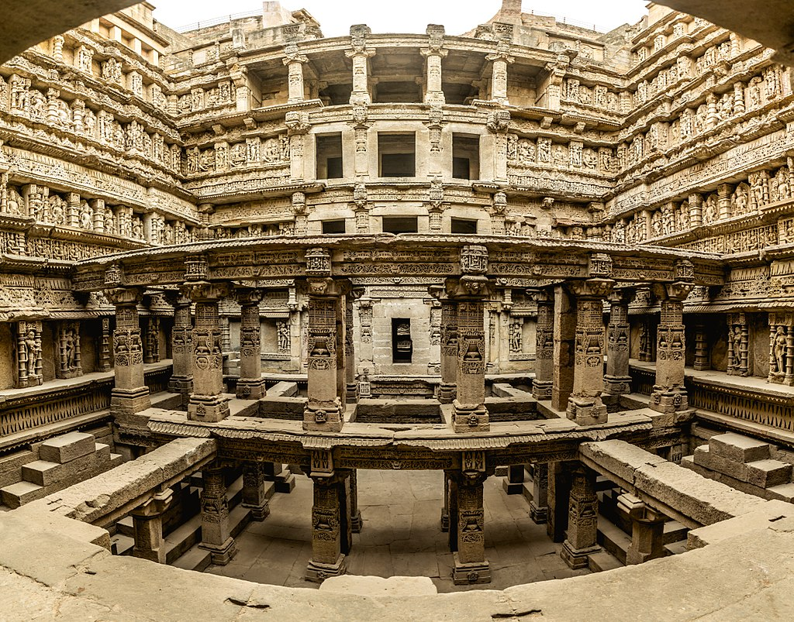
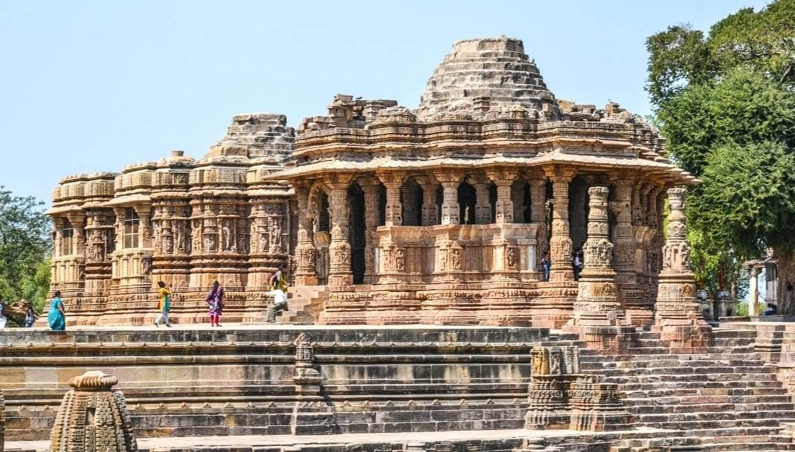
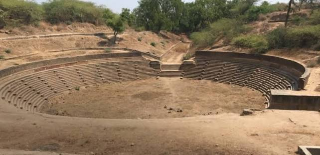

Solanki (Chaulukya) Explorer
Descend the carved steps of Rani ki Vav and stand before the sun-facing shrine of Modhera. Discover the Solankis of Gujarat — the dynasty that turned water itself into art, raising stepwells and temples so intricate that UNESCO now calls them a Queen's marvel.
The Chaulukyas of Gujarat, Builders in Stone and Water
The Solankis — also known as the Chaulukyas — rose to power in Gujarat around 940 CE, when Mularaja I founded the dynasty and established his capital at Anahilapataka (modern Patan). Over the next three centuries, the dynasty controlled much of present-day Gujarat and parts of Rajasthan and Malwa, presiding over one of medieval India's most prosperous and artistically ambitious kingdoms.
The Solankis are remembered above all for their architecture: an era that produced the intricately carved stepwell of Rani ki Vav, the Sun Temple at Modhera, and a distinctive Maru-Gurjara temple style that blended structural sophistication with dense, jewel-like ornamentation.
🪷 The Chaulukya Legacy
- c. 940–1244 CE — Three centuries of Solanki rule over Gujarat.
- Capital at Anahilapataka — Modern Patan, Gujarat, seat of the dynasty's power.
- Maru-Gurjara Style — A temple and stepwell architecture prized for its intricate stone carving.
- UNESCO Recognition — Rani ki Vav was inscribed as a World Heritage Site in 2014.
Major Rulers of the Solanki Line
From the dynasty's founder to the queen and king whose stepwell and temple still draw visitors nine centuries later.
Mularaja I (r. c. 940–995)
Founder of the Solanki dynasty, who established Anahilapataka as the capital and laid the foundations of Chaulukya power in Gujarat.
Bhima I (r. c. 1022–1064)
Commissioned the Sun Temple at Modhera around 1026 CE; his reign also saw the sack of Somnath by Mahmud of Ghazni, which the dynasty later helped restore.
Udayamati (11th century)
Queen consort of Bhima I, traditionally credited with commissioning the magnificent stepwell of Rani ki Vav in his memory.
Jayasimha Siddharaja (r. c. 1092–1142)
The dynasty's most powerful king, who expanded Solanki territory into Malwa and made Anahilapataka a major centre of trade and scholarship.
Kumarapala (r. c. 1143–1172)
A patron of Jain scholarship under the guidance of Acharya Hemachandra, who built and restored temples across Gujarat and Rajasthan.
Bhima II (r. c. 1178–1241)
The last major Solanki ruler, whose long reign saw the rise of the Vaghela feudatories who would eventually supplant the dynasty.
🛕 Hallmarks of Solanki Architecture
- Stepwell Engineering: Multi-storeyed stepwells (vavs) combining water storage with sculpted galleries, epitomised by Rani ki Vav.
- Maru-Gurjara Style: A temple idiom marked by dense figural carving, ornate ceilings, and star-shaped platforms.
- Sun Worship: The Modhera Sun Temple's surya-kund tank and precisely aligned sanctum reflect Solanki solar devotion.
- Jain Patronage: Under Kumarapala, richly carved Jain temples flourished alongside Shaiva and Vaishnava shrines.
Rani ki Vav and the Sun Temple at Modhera
Rani ki Vav ("the Queen's Stepwell"), built at Patan in memory of Bhima I, descends seven levels below ground, its walls covered in over five hundred sculpted panels depicting deities, celestial nymphs, and mythological scenes. Silted over for centuries, it was rediscovered largely intact and inscribed as a UNESCO World Heritage Site in 2014.
At Modhera, the Sun Temple complex pairs a stepped surya-kund tank with a sabha mandapa and sanctum aligned so that sunlight strikes the inner shrine at the equinoxes — a fusion of astronomical precision and Maru-Gurjara stone-carving that stands among Gujarat's finest architectural achievements.
Chronology of the Solanki Dynasty
From the founding of Anahilapataka to the rise of the Vaghelas who succeeded the Chaulukyas.
Founding of the Dynasty
Mularaja I establishes Solanki rule in Gujarat, making Anahilapataka (Patan) his capital.
The Sack of Somnath
Mahmud of Ghazni raids the Somnath temple during Bhima I's reign; the Solankis later support the temple's restoration.
Modhera and Rani ki Vav
The Sun Temple at Modhera is built, and Queen Udayamati commissions Rani ki Vav in Bhima I's memory.
Zenith under Siddharaja
Jayasimha Siddharaja expands the kingdom into Malwa and turns Anahilapataka into a major centre of power and scholarship.
Kumarapala's Patronage
Guided by the Jain scholar Hemachandra, Kumarapala builds and restores temples across the Solanki realm.
Rise of the Vaghelas
Solanki authority fades and passes to the Vaghela feudatories, ending independent Chaulukya rule over Gujarat.
Stepwells and Temples of the Solankis
A glimpse at the stone-carved water architecture and temples associated with the Solanki dynasty of Gujarat.



📚 References & Further Reading
- Majumdar, Ramesh Chandra (ed.) (1957). The Struggle for Empire (History and Culture of the Indian People, Vol. V). Bharatiya Vidya Bhavan.
- Dhaky, M. A. (1961). Deva-Kulika Series in West Indian Temples. Journal of the Oriental Institute.
- Archaeological Survey of India. Monument records: Rani ki Vav, Patan and Sun Temple, Modhera.
- UNESCO World Heritage Centre (2014). Rani-ki-Vav (the Queen's Stepwell) at Patan, Gujarat — nomination dossier.
- Sompura, Kantilal F. (1968). The Structural Temples of Gujarat. University of Gujarat.